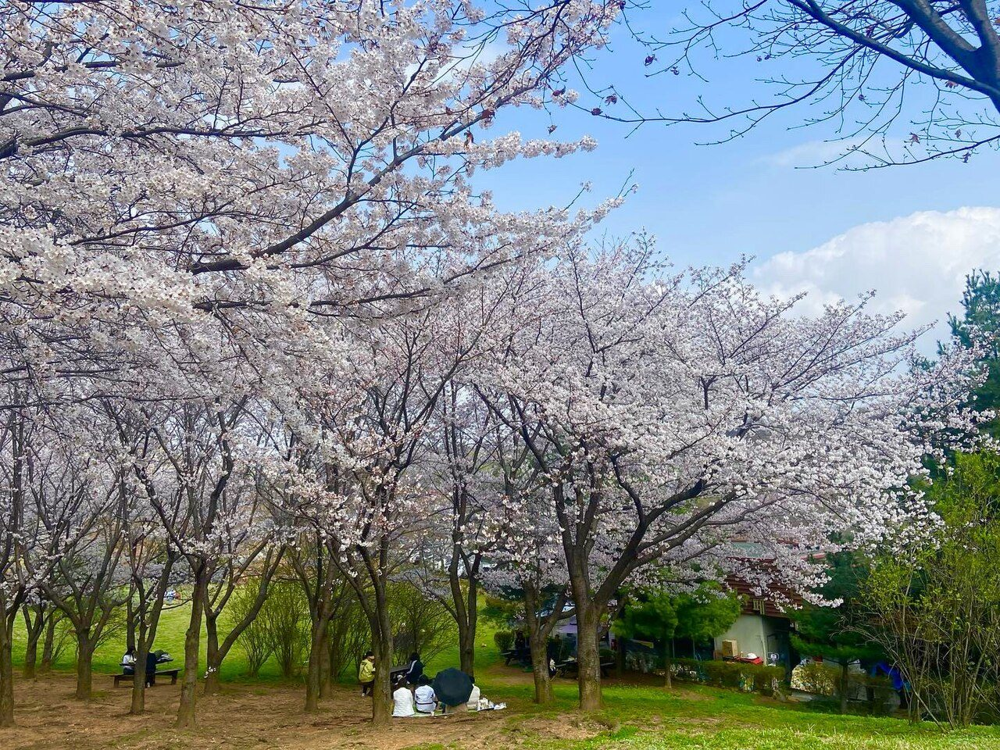
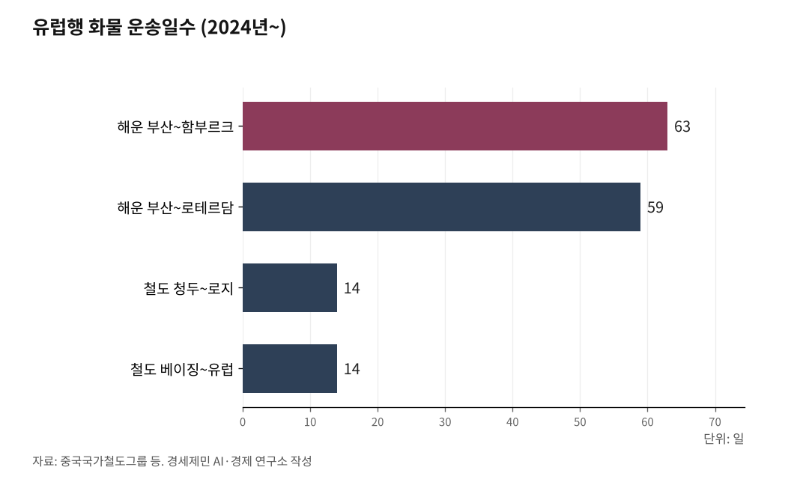

서해안벨트 핵심축 인천발 서해선 KTX⑥
AI경세제민=김갑봉 기자 | [대륙편] 서해선의 종착지는 인천이 아니다 — 환황해 철도망으로 가는 길

시흥시청역 분기기 하나로 시작한 서해선 KTX, 그 끝은 유럽이다
1~5편이 그린 여객·화물·공항·제3공항철도가 하나로 수렴한다
분기기 하나에서 시작한 혁명, 어디까지 왔나
1편에서 시흥시청역 분기기 하나를 제안했다. 분기기 하나면 송도에서 출발해 서해안 10개 도시를 지나 익산까지 KTX가 직결된다. 7299억원짜리 연결선이 아니라 수십억원짜리 분기기 하나의 이야기였다.
2편에서는 평택~오송 병목을 짚었다. 하루 190회, 한 칸도 끼울 틈이 없는 46.9km 외줄기 통로. 5조7000억원짜리 지하 고속철도 두 개를 기다리지 않아도 서해선이 우회 루트가 된다고 했다.
3편에서 화물을 다뤘다. 한국 철도화물 수송분담률 1.3%, 경제협력개발기구(OECD) 최하위. 코레일 부채 22조원. 서해선·장항선·평택선이 서해안 화물 우회축의 뼈대를 갖추고 있다고 했다. 인천신항 350만TEU(20피트 컨테이너 환산 단위)를 처리하는데 철도 인입선이 없다는 현실도 짚었다.
4편에서 인천공항을 다뤘다. 3031억원 투자하고 4년 만에 폐지된 인천공항 KTX. 제2공항철도(1조7000억원)와 제3공항철도(4조2000억원). 10조원짜리 경기국제공항 대신 4조원짜리 철도가 낫다고 했다.
5편에서 제3공항철도를 구체화했다. 인천공항에서 무의도·영흥도·대부도를 거쳐 화성시청역까지. 서해선과 만나면 전국 KTX망이 인천공항에 직결된다. 환황해 철도망의 마중물이라고 했다.
여기까지가 국내 이야기다. 6편에서는 국경 너머를 본다.

평양~베이징 열차가 다시 달린다
2026년 3월 12일, 평양과 베이징을 잇는 국제열차가 6년 만에 운행을 재개했다. 2020년 북한이 국경을 봉쇄한 뒤 멈춰 섰던 열차다.
매주 월·수·목·토 주 4회 운행한다. 베이징에서 오후 5시26분에 출발해 랴오닝성 단둥을 거쳐 이튿날 오후 6시경 평양에 도착한다. 편성 가운데 뒤쪽 2량만 승객용이다. 우선 외교관 등 공무 목적 인원을 태운다.
궈자쿤 중국 외교부 대변인은 "상시적 여객열차 운영 유지는 양국 인적 왕래 편리화에 중요한 의의를 갖는다"고 말했다.
이 열차는 1954년부터 운행해온 북중 우호의 상징이다. 2013년에는 매일 운행으로 증편됐다. 노선은 평양에서 신의주를 거쳐 압록강 철교(조중우의교)를 건너 단둥으로 들어간 뒤 베이징까지 이어진다.
단둥에서는 신압록강대교도 연내 개통을 목표로 하고 있다. 기존 철교의 용량 한계를 보완할 새 교량이다. 북중 간 물류량이 늘어날 채비를 하고 있다는 뜻이다.
대륙철도 논의가 다시 현실로 돌아왔다. 그런데 이 열차에 한국은 없다.
서울~베이징 고속철도, 여객으로는 경제성이 나오지 않는다
이재명 대통령이 2026년 1월 중국 국빈방문에서 서울~평양~베이징 고속철도 구상을 제시했다. 시진핑 주석은 원칙적으로 긍정 반응을 보였다.
구상은 웅장하다. 서울에서 평양, 신의주를 거쳐 단둥, 베이징까지 약 1265km. 시속 300km급 고속철도로 4~5시간이면 닿는다는 계산이다.
그런데 비행기는 2시간이면 간다. 서울~베이징 항공편은 하루 수십 편이 뜬다. 공항 탑승 절차까지 합쳐도 4시간이면 충분하다. 5시간짜리 고속철도가 이길 수 있는 거리가 아니다.
파리~런던 유로스타(약 500km)는 도심~공항 이동시간, 탑승 절차를 합산하면 비행기보다 빠르다. 그래서 철도가 이겼다. 서울~베이징은 거리가 두 배를 넘는다. 여객만 놓고 보면 비행기가 압도적으로 유리하다.
여객 프레임으로 접근하면 경제성이 나오지 않는다. 그리고 여객 이전에 넘어야 할 벽이 있다.
북한에 고속철도가 없다. 2018년 남북공동조사단이 직접 측정한 수치를 보면, 개성~평양 구간 시속 30km, 개성~사리원 구간은 시속 10~20km에 불과했다. 북한 철도의 98%가 단선이고, 70% 이상이 일제시대에 건설됐다.
전기 체계도 다르다. 한국과 중국은 교류 2만5000V를 쓴다. 북한은 직류 3000V다. 1960년대 기술이 그대로 남아 있다. 신호 체계도 북한은 완목신호기를 쓴다. 한국의 디지털 자동폐색, 중국의 CTCS(중국형 열차제어시스템)와 완전히 다르다.
궤간(1435mm 표준궤)만 같다. 나머지는 모두 다르다.
북한 구간 약 450km를 고속철도로 새로 깔아야 한다. 2020년 한국건설산업연구원 추정 30조원을 국내총생산(GDP) 물가보정지수로 현재가에 맞추면 37~39조원이다. 여기에 변전소, 송전망, 발전소까지 세트로 건설해야 한다. 북한 현재 전력 사정으로는 고속철도 전기 공급이 어렵다.
공사비는 누가 내는가. 한국 단독 부담은 현실적으로 어렵다. 북한에 재원이 없다. 중국은 전면에 나서길 꺼린다. 유엔 대북제재가 해제되지 않는 한 국제 컨소시엄 참여도 쉽지 않다.
여객 프레임만으로는 서울~평양~베이징 고속철도의 경제성을 확보하기 어렵다.
대륙철도의 본질은 화물이다
그렇다면 대륙철도는 포기해야 하는가. 아니다. 프레임을 바꾸면 된다.
3편(화물편)에서 다뤘듯, 한국은 지정학적으로 섬나라와 같다. 북쪽이 막혀 있어 대륙으로 가는 육상 루트가 없다. 모든 화물이 바다로만 나간다.
해운으로 유럽까지 가려면 수에즈운하를 거쳐 35~45일이 걸린다. 2024년부터 홍해 위기로 희망봉을 돌면 57~63일이다. 부산~함부르크가 63일, 로테르담까지 59일이다.
중국이 운영하는 중유럽화물열차(CRE, China Railway Express)는 어떤가. 베이징에서 유럽까지 평균 14일이다. 청두~폴란드 로지 9965km가 14일, 하얼빈~함부르크가 15~17일이다. 해운의 3분의 1 수준이다. 운송비는 항공의 5분의 1이다.
해운보다 빠르고, 항공보다 싸다. 이 틈새가 대륙철도의 존재 이유다.
반도체, 디스플레이, 자동차 부품, 석유화학 제품. 시간에 민감하지만 항공으로 나르기엔 비싼 고부가가치 화물이 타깃이다. 한국 주력 수출품 대부분이 여기에 해당한다.
여객에서는 비행기가 유리하다. 화물에서는 철도가 유리하다. 대륙철도의 본질은 화물에 있다.
화물 중심으로 접근하면 풍경이 달라진다. 고속철도가 아니어도 된다. 시속 120~150km 화물전용선이면 충분하다. 건설비가 고속철도의 절반 이하로 줄어든다. 전력 문제도 상대적으로 단순해진다. 37~39조원이라는 천문학적 수치가 크게 낮아진다.
대륙철도를 정치적 선언이 아닌 물류 인프라로 접근하면 현실성이 달라진다.
한국 철도망부터 고쳐야 한다
대륙과 연결하기 전에, 남한 철도망이 화물열차를 제대로 소화할 수 있는지부터 봐야 한다. 현재로서는 어렵다.
3편에서 짚었다. 한국 철도화물 수송분담률 1.3%, OECD 최하위. 코레일 화물은 9년간 46.8% 줄어 2024년 2000만톤 선이 무너졌다. 부채는 22조3000억원이다.
화물열차가 다니지 못하는 구조적 이유가 있다.
첫째, 대피선(待避線)이 짧다. 한국 대부분의 대피선은 500~600m 수준이다. 대피선은 본선을 달리는 열차가 지나갈 때 다른 열차가 비켜서는 선로다. 코레일이 2022년 시험 운행한 장대화물열차 최장 편성이 777m였다. 기존 대피선으로는 이 열차가 비켜설 곳이 없다.
대륙철도 시대에는 1km 이상 편성이 기본이다. 유럽과 중국은 이미 1km급 화물열차를 운행한다. 대피선을 전면 재설계하지 않으면 장대화물열차가 다니기 어렵다. 대피선 연장은 단순히 선로를 늘리는 것이 아니다. 신호체계, 분기기, 용지 확보까지 연동되는 대규모 사업이다.
둘째, 여객과 화물이 선로를 나눠 쓴다. 경부선·호남선 모두 KTX와 화물열차가 같은 선로 위를 달린다. 고속 여객 위주로 다이아(열차 운행도표)가 짜이니 저속 화물열차는 대피선에서 수시로 대기한다. 화물열차 정시율 67.4%의 원인이다.
셋째, 항만 인입선이 없다. 인천신항은 연간 350만TEU를 처리하는 국내 2위 항만인데 철도 인입선이 전무하다. 부산신항도 철도 비중이 5% 미만이다. 대륙철도가 열려도 항만에서 철도로 화물을 싣지 못하면 의미가 없다.
이 세 가지가 바뀌지 않으면, 대륙철도가 열려도 화물이 인천이나 부산에 내려서 트럭으로 분산되는 구조가 반복될 수 있다.
남한 재정비가 먼저다. 대피선 1km 이상으로 전면 재설계, 인천신항 철도 인입선 조기 착공, 부산신항 철도 비중 확대. 이것은 대북제재나 남북관계와 무관하게 착수할 수 있는 과제다.
인천이 정점이 된다
한반도 간선철도를 펼쳐놓으면 모든 길이 인천으로 모인다.
경부선 끝은 부산이다. 호남선 끝은 목포다. 전라선 끝은 여수다. 중부내륙선·남부내륙선 끝은 거제다. 경강선 끝은 강릉이다. 중앙선 끝은 부산이다. 이 다섯 기점에서 출발한 열차가 모두 수도권을 거쳐 인천에 닿는다.
인천에는 무엇이 있는가. 인천신항(350만TEU), 인천공항(국제선 여객 세계 3위), 그리고 서해선이 있다.
5편에서 다뤘듯, 제3공항철도가 놓이면 인천공항이 서해선과 연결된다. 인천공항~화성시청역~서해선~익산~호남선·전라선. 비행기로는 세계 3위, 철도로는 전국 KTX망의 출발점, 해상으로는 한중 항로의 관문. 세 가지가 하나로 묶인다.
여기서 한 걸음 더 나아가 보자. 화물 전용 대륙철도는 서울 도심을 통과할 수 없다. 1km급 장대화물열차를 서울 한복판으로 끌어들이는 것은 불가능하다. 도심 선로는 용량이 포화 상태고, 화물열차와 도시철도를 섞을 수 없다.
별도 노선이 필요하다. 인천신항에서 출발해 영종도, 강화도를 경유하는 루트다. 강화도에서 북쪽으로 올라가면 북한 서해안(해주·남포)과 맞닿는다. 서울 도심을 우회하면서 항만과 대륙철도를 직결하는 구조다.
3편(화물편)에서 이미 다뤘다. "서해선→대곡→경의선→문산→개성으로 이어지는 남북철도 우회축." 이 축의 연장선에 영종도~강화도~북한 서해안 루트가 있다. 복선 기본, 화물 집중 구간은 복복선, 대피선 1km 이상, 교류 2만5000V 전철화. 처음부터 화물과 고속철도를 함께 수용하는 설계로 깔아야 한다.
이 구조가 완성되면 인천은 서울의 위성도시가 아니라 한반도 철도망의 허브 역할을 하게 된다.
환황해 철도망으로 가는 길
북한은 이미 대륙과 연결돼 있다. 한국만 빠져 있다.
북한과 중국은 세 곳에서 철도가 연결된다. 신의주~단둥, 만포~집안(지안), 남양~도문(투먼)이다. 러시아와는 두만강~하산 한 곳이 연결된다.
신의주~단둥은 서해안 축 끝이다. 평의선(평양~신의주)의 종착점이고 중국횡단철도(TCR, Trans-China Railway)의 관문이다. TCR은 중국 대륙을 횡단해 카자흐스탄에서 시베리아횡단철도(TSR, Trans-Siberian Railway)와 만난다. 한반도에서 유럽까지 가는 최단 철도 경로다.
남양~도문은 동북 축 끝이다. 함경선과 연결되고, 인근에 나진·선봉 경제특구가 있다. 두만강~하산은 TSR의 종착점과 직결된다. 부산에서 동해선을 타고 북상하면 나진~하산~시베리아~유럽으로 나갈 수 있다.
한국이 남북철도로 연결되면 TCR과 TSR, 두 대륙횡단 루트를 동시에 쓸 수 있는 나라가 된다.
그런데 한국 산업과 북한 자원을 연결하면 대륙철도의 의미는 더 깊어진다. 포항 철강단지는 철광석을 호주와 브라질에서 해운으로 들여온다. 황해도와 함경도에 철광석이 있다. 구미·수원·화성 반도체단지는 텅스텐과 몰리브덴을 중국에서 80% 이상 수입한다. 자강도에 텅스텐이 있다. 새만금·군산 이차전지단지는 마그네사이트가 필요하다. 개천과 단천에 세계 3위 매장량의 마그네사이트가 있다.
이런 관점에서 보면 대륙철도는 통일 이벤트라기보다 한국 제조업의 원료 공급망을 재편하는 전략에 가깝다.
이 이야기는 여기서 끝나지 않는다. 환황해(環黃海) 철도망 — 황해를 둘러싼 한국·중국·북한의 해안 지역을 하나의 물류권으로 묶는 구상. 남한 철도망 재정비부터 동해선 남북 연결, 서해안 축 인천~개성·해주 연결, TCR·TSR 전면 연결까지. 이 그림을 본격적으로 펼치는 것은 다음 시리즈 "환황해 철도망의 현실과 미래"에서 다룬다.
1편에서 시흥시청역 분기기 하나를 제안했다. 그 분기기가 서해안 10개 도시를 잇고, 인천신항과 인천공항을 관통하고, 대륙철도의 출발점이 됐다. 서해선의 종착지는 인천이 아니다. 유라시아 대륙이다.
참고문헌
· "6년만에 평양-베이징 여객열차 재개", 연합뉴스, 2026.3.10.
· "北中 평양-베이징 여객열차 12일 운행재개(종합2보)", 연합뉴스, 2026.3.10.
· "[특집 제5차 철도망⑥] 기후위기 시대 철도에서 사라진 화물", 인천투데이, 2025.8.13.
· "서해선·평택선·장항선 3개 노선 동시 개통", 정책브리핑, 2024.11.1.
· "코레일, 50량 장대화물열차 상업 시운전 성공", 국제컨테이너철도운송협회(ICCTT), 2022.8.14.
· "북한 철도 현황", 통일부 북한정보포털.
· "남북철도 공동조사 결과보고", 국토교통부, 2018.
· "서울~신의주 고속철도·고속도로 건설비 추정", 한국건설산업연구원·대한건설엔지니어링, 2020.10.
· "China-Europe freight train development(중유럽화물열차 발전 보고서)", 중국국가철도그룹, 2022.
· "Transit time and cost analysis of China-Europe Railway Express(중유럽화물열차 운송시간과 비용 분석)", ScienceDirect, 2024.
· "인천국제공항-화성시청 간 철도망 구축 정책타당성 검토", 경세제민 AI·경제 연구소, 2025.
· "[칼럼] 기후위기 시대, 경기국제공항보다 '제3공항철도'가 낫다", 경세제민 AI·경제 연구소, 2025.
※ 이 기사는 AI 프로그램 클로드를 활용해 작성했습니다.
사진 출처
· [대표사진] Jeong seolah, "Ansan lake park.jpg", 위키미디어 공용, CC0, https://commons.wikimedia.org/wiki/File:Ansan_lake_park.jpg
※ 이 기사는 인공지능을 활용해 작성했습니다.
관련기사
- 서해안벨트 핵심축 인천발 서해선 KTX⑤ 경기국제공항대신 제3공항철도
- 서해안벨트 핵심축 인천발 서해선 KTX④
- 서해안벨트 핵심축 인천발 서해선 KTX③-하
- 서해안벨트 핵심축 인천발 서해선 KTX③-중
저작권자 © AI경세제민 무단전재 및 재배포, AI학습 및 활용 금지